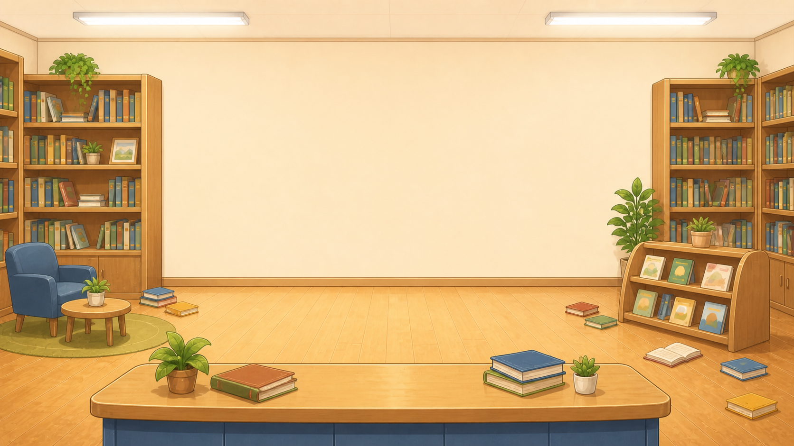
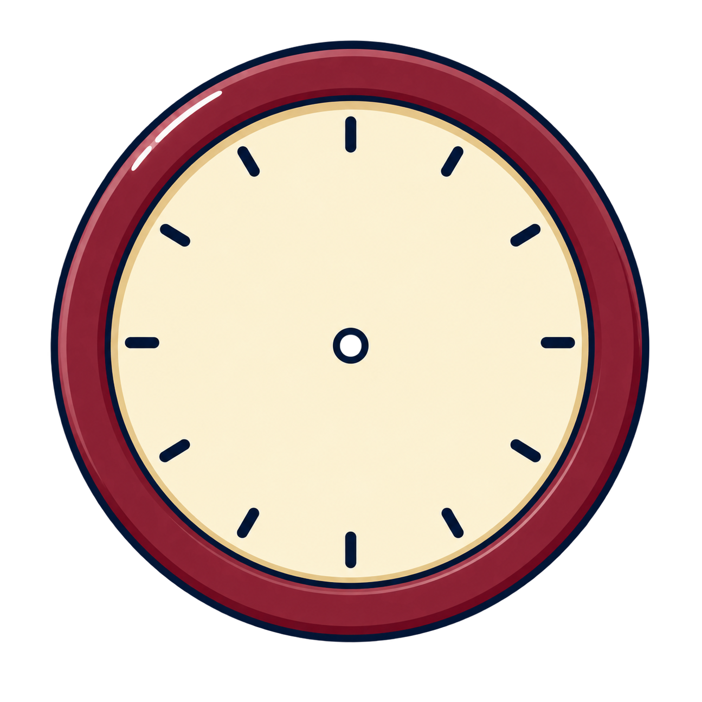
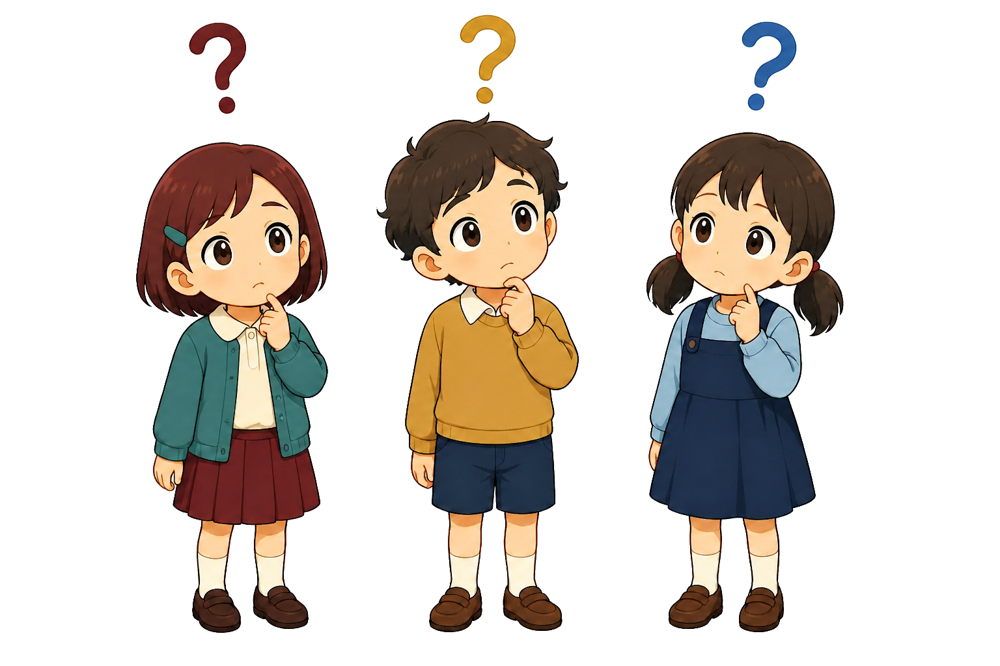
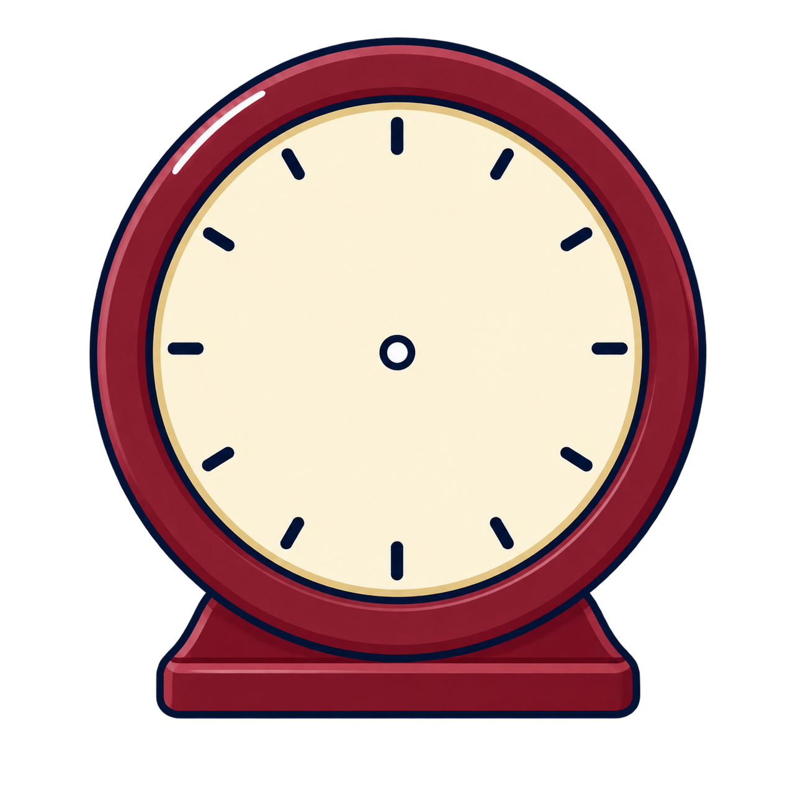
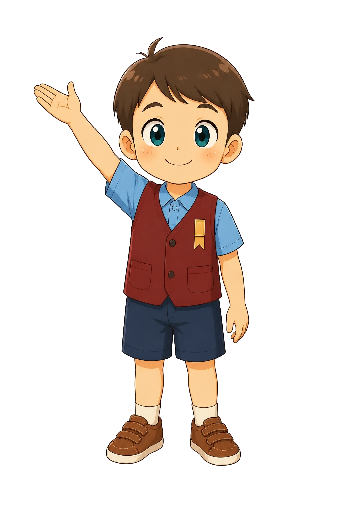
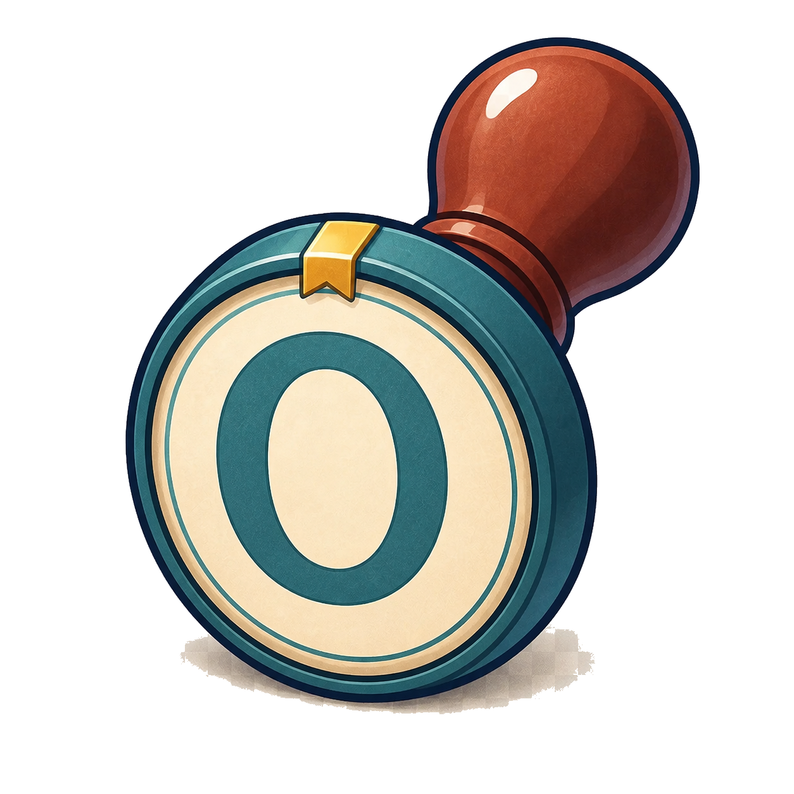
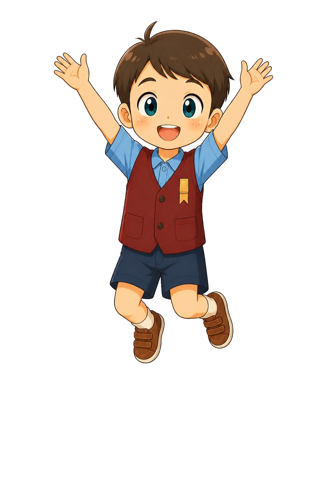
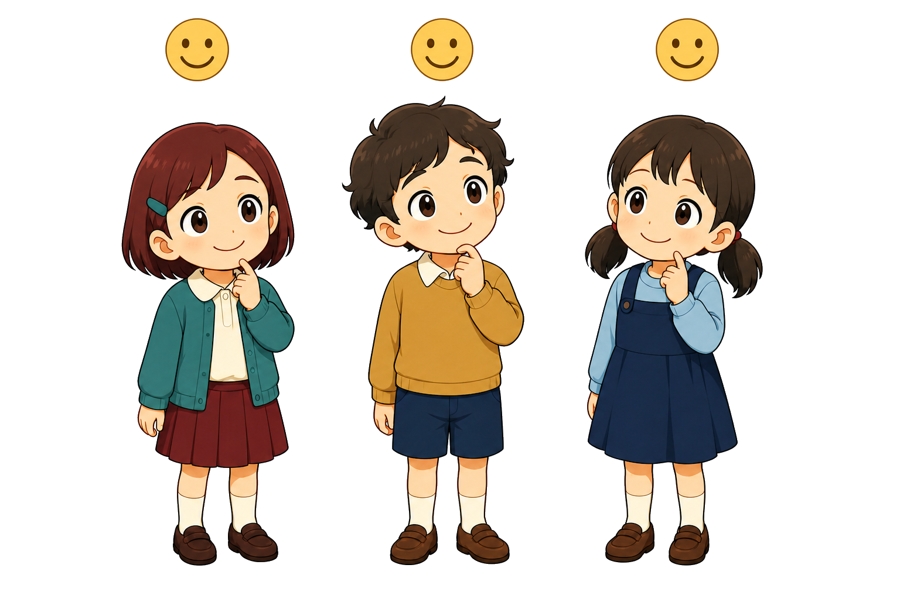

큰일 났어! 도서관 시계가 고장 나서 시간이 뒤죽박죽이야! 당장 독서 교실을 시작해야 하는데 언제인지 알 수가 없어. 누가 좀 도와주세요!


걱정 마세요! 시계 보는 법을 잘 아는 제가 도와드릴게요!
다행이다! 그럼 지금 멈춰있는 이 시계가 몇 시인지 먼저 확인해 줄래?
드래그 앤 드롭: 하단의 숫자 카드를 `[?]` 빈칸으로 드래그.
누르기 후 빈칸 누르기도 지원한다.

맞았어! 긴바늘이 12를 가리키면 짧은바늘이 가리키는 숫자 그대로 3시 정각이야.
다시 볼까? 긴바늘이 12에 있으니까, 짧은바늘이 가리키는 숫자를 읽으면 돼.
[3시]


와, 정답이야! 시계를 아주 잘 보는구나. 고마워, 덕분에 첫 번째 시계를 고쳤어. 이제부터 우리 도서관을 수학으로 구해줄거라 믿어!!